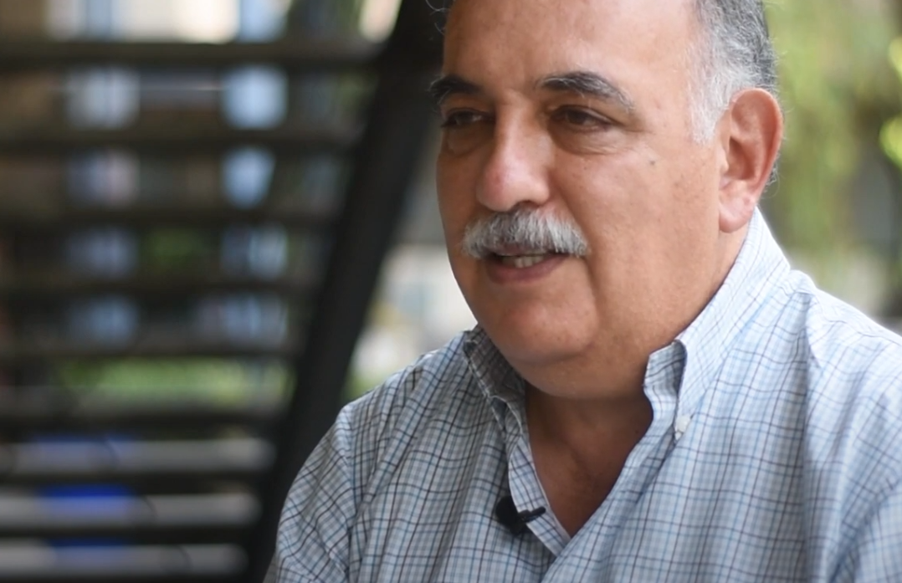

Departamento de Análisis de Riesgos Naturales y Antropogénicos

Ing. Carlos Arce León
Jefe del Departamento
- Edificio A de la Unidad de Investigación Multidisciplinaria II, planta baja.
- 📞 5516231750 ext. 38946 y 38988
- ✉️ dearna@acatlan.unam.mx
🎯 Nuestro Objetivo
-
Desarrollar investigación aplicada en la caracterización de las acciones generadas por la exposición a agentes perturbadores tanto de origen natural como antrópico, a través del conocimiento y estudios experimentales de materiales y sistemas estructurales.